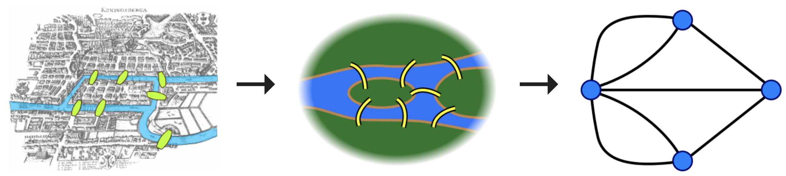
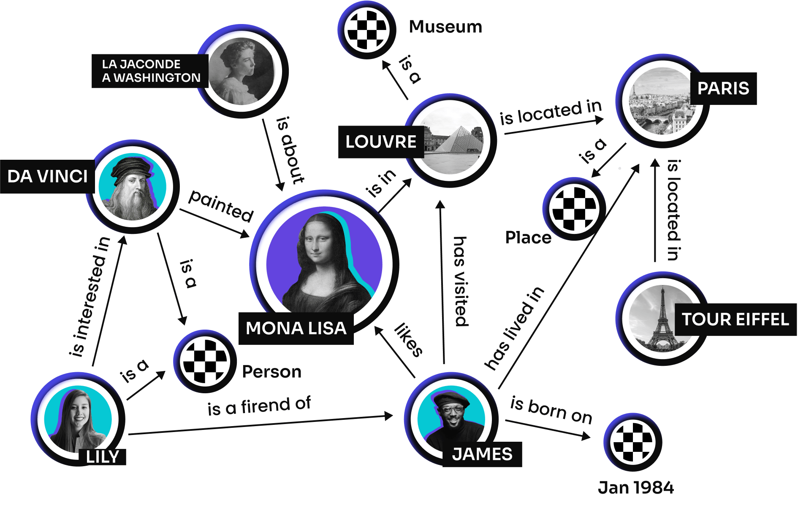

Math abstraction, graph-structured data model or topology to intergrate data. Knowledge graphs (KGs) are used to store interlinked entities. Relationships also can be precisely described using KG abstraction and be used for calculating relationship among the objects. As a consequence KG allow to build mathematical apparatus describing options which can be used in particular purposes.
Nowadays mathematics might seem like a toolbox that contains terms, abstractions, and solvations for each problem type. We used to take mathematical principles and expand them on a problem and vice versa. It helps us to build specific models that can be understood easily and unambiguous by any person with mathematical background. Life gives us the capability to leverage such tools to explain the word and bound them together in order to get a more complex but clear and correct picture of the world.
Pretty hard to tell when graphs were introduced in the world of math because practically people have been used this in practice a long time ago. But its common to say that first graph problem was designed by Euler in 1736 - "Seven Bridges of Konigsberg.

The city of Konigsberg in Prussia (now Kalinigrad, Russia) was set on both sides of the Pregel River, and included two large islands. They were connected to each other, or to the two mainland portions of the city, by seven bridges. The problem was stated is to devise a walk through the city that would cross each of those bridges once and only once.
So now, we can think about the graph in terms of nodes and edges that represent a connected system with specific properties.
BTW: Neural networks are complex acyclic directional graphs.
Knowledge graph (KG) is pretty the same abstraction but it is used in specific domain cases. Knowledge Graph was introduced in the '70s. Of course, we can consider all our known things and associations among them in our mind as KG, but formally the term KG was born in the second half of the last century. The term KG was coined as early as 1972 in a discussion of how to build modular instructional systems for a course and in the late 1980s the project "Knowledge Graphs" was created, focusing on the design of semantic networks with edges and their relations.
Graphs also might be directed or undirected. Directed graph is a graph with nodes with defined direction (from point "a" to point "b"). Undirected graph contains all nodes without specified direction.
Graphs might be cyclic and acyclic. Cyclic graph contains at least on cycle (loop). Acyclic graphs don't contains cycles (loops). It's easier to avoid loops if graph is directed.
Graphs might be called multigraphs or just simple graphs. Multigraphs might contains multiple edges between the same pair of nodes and also can contain loops.
Graphs might be homogeneous or heterogeneous. These terms primarly define the hidden meaning behind the nodes and eges. In homogeneous graph all edges and nodes are represent the same domain meaning. For example, graph that contains cities and car roads only can be called homogeneous, but if the graph contain railways, planes and not only cities but also airports and stantions then it might be called heterogeneous graph.
KG is a knowledge base that uses a graph structured data model or topology to intergrate data. It's used to store entites linked among each other, such as objects, situations, concepts while also encoding the semantic underlying the used terminology.
By means of using graphs, the complex systems might be described in terms of relation. Let's take the example of internet web pages. Each page might be connected in the graph with other pages employing hyperlinks. It helps google to correct their search queries answers to be more relevant and faster. KGs link ideas together making transitions possible and able to be described, as consequence, calculated automatically.
KGs are used in medical ontologies such as UMLS. It helps to organize all knowledge about symptoms, diseases and medical procedures together. It is widely used in NLP model building for medicine.
We can absorb any type of different terms and bound them building the model which helps to find the closest ones. Such operation helps to solve search tasks faster instead of using kNN, KdTree models.
Hierarchical organization of data (knowledge) might also require a smaller model size, and graphs can also help to resolve this problem. The approach of using graph models of the word embeddings instead of shallow ones showed that the space size might be reduced in N times making the model lighter and sometimes even more precise in predictions. In this video, the approach has been described by Maxim Galkin and I definitely will write a post about it.
